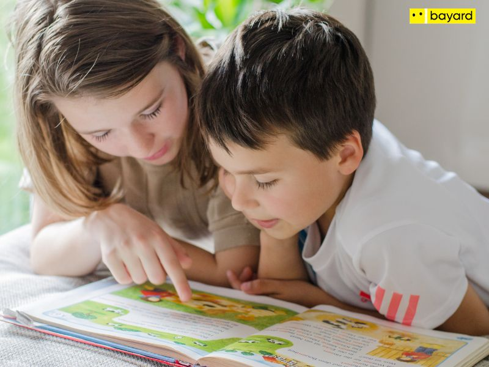
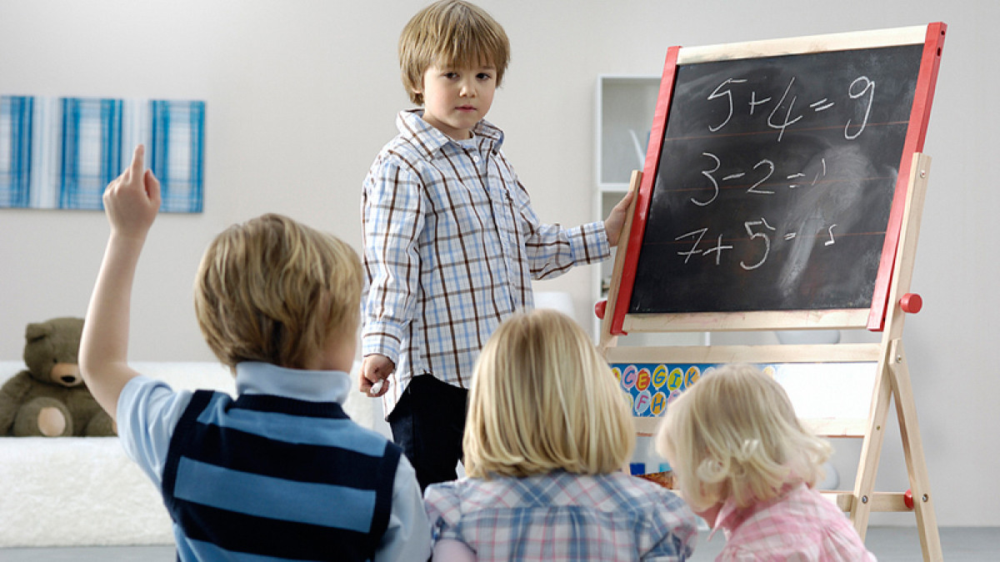

Aprendizaje Auditivo
Los aprendices auditivos retienen mejor la información escuchando explicaciones, conversaciones o grabaciones.

Conoce las diferentes formas en que las personas aprenden
Las personas visuales aprenden mejor con imágenes, colores, gráficos, videos y mapas mentales.
Los aprendices auditivos retienen mejor la información escuchando explicaciones, conversaciones o grabaciones.
Quienes tienen este estilo aprenden haciendo, moviéndose o manipulando objetos.

Este tipo de aprendiz aprende mejor leyendo textos, tomando apuntes o resumiendo información.

Las personas con este estilo prefieren estudiar solas, organizar su espacio y trabajar independientemente.
| Estilo | Fortalezas | Actividades Recomendadas |
|---|---|---|
| Visual | Reconoce patrones, entiende gráficos | Diagramas, videos, dibujos |
| Auditivo | Buena memoria auditiva | Audio, debates, explicaciones |
| Kinestésico | Aprendizaje práctico | Experimentos, maquetas |
Aprendizaje Social
Los aprendices sociales destacan trabajando en equipo, debatiendo o explicando ideas a otros.
